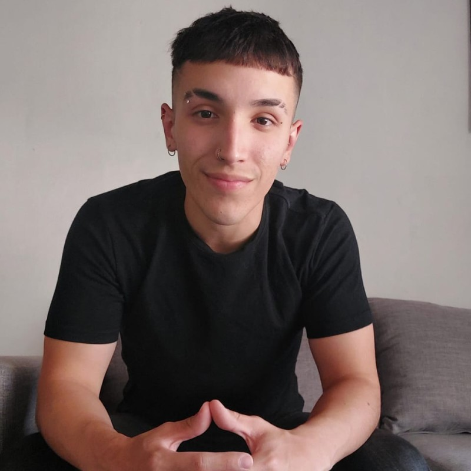

Sobre mi



Desarrollador Front-End
Soy un desarrollador Front-End con proyección a desarrollador
Fullstack.
Busco un equipo al cual aportar mi conocimiento y desempeño
tanto como para el desarrollo web como para aplicaciones. Soy
resolutivo, tengo ambición y buena comunicación para llevar a cabo
cualquier tipo de proyecto.
Estoy constantemente instruyéndome y
aprendiendo sobre nuevas tecnologías, en cuyo caso se presente la
situación en la que haya que aprender algo nuevo estoy preparado para
cualquier desafío.